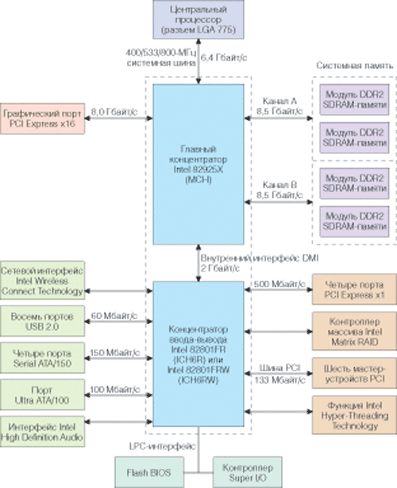

Олег Денисов, Константин Яковлев
Едва ли не самое ожидаемое событие лета 2004 г., официальный анонс платформы Socket LGA 775 для новых процессоров Intel Pentium 4, лишь подогрел интерес к дискуссии внутри ИТ-сообщества касательно перспектив развития ПК в целом и настольных решений в частности. Строго говоря, секретов здесь не было и ранее, примерный план коренной перестройки архитектуры был подготовлен задолго до его официального принятия. Тем не менее отдельные всплески резонанса, вызванного новыми инициативами Intel, последовавшими одна за другой, не утихли и по сей день. Полярные реакции - от раздражительного "Опять менять все и сразу" до удовлетворенного "Наконец-то нам развязали руки! Отныне мы можем то-то и то-то…" - можно было наблюдать у рядовых пользователей и разработчиков ПО, проектирующих системы инженеров, аналитиков, маркетологов и т. д. и т. п.
Поводов для обсуждений действительно было более чем предостаточно. А причиной всему стал еще один виток технологий, с помощью которых приходится в очередной раз "расшивать" узкие места. Прошедшим летом "под горячую руку" попала сразу вся платформа, начиная с процессора и заканчивая спецификацией архитектуры ПК.
На стыке технологий
Итак, что принесла нам новая платформа Socket LGA 775? В составе обновленной архитектуры появились "новые" процессоры Pentium 4/Pentium 4 Extreme Edition и Celeron и новый процессорный разъем LGA 775; было объявлено новое семейство НМС 925-й и 915-й серий; анонсирован и нашел реальное применение новый тип памяти DDR2 SDRAM; получили официальную "прописку" аудиоподсистемы класса High Definition Audio; продемонстрирован новый встроенный графический контроллер Intel Graphics Media Accelerated 900; раскрыты секреты и воплощена на практике технология организации дисковых массивов Intel Matrix Storage; спроектировано следующее поколение магистральных шин PCI Express; наконец получила путевку в жизнь технология Intel Wireless Connect.
"И все это ради чего?" - спрашивают неискушенные пользователи. "Ради вашего цифрового завтра", - отвечают им в Intel. Каким будет это завтра, в общем и целом, кажется, понятно, но вот над деталями предстоит поработать. Собственно, это и происходит на наших глазах в рамках реализации концепции "цифрового дома и офиса".
Наборы микросхем
Кардинальная перестройка всей платформы базируется на преимуществах значительно переработанной архитектуры нового семейства НМС Intel 925X Express и 915P Express (кодовые наименования соответственно Alderwood и Grantsdale). Еще один фигурирующий в спецификациях плат НМС, Intel 915G Express, - это по существу разновидность версии 915P со встроенным графическим контроллером Intel GMA 900. Причины, побудившие Intel пересмотреть принципы взаимодействия базовых функциональных блоков НМС между собой и с периферией, кроются в прежней архитектуре. В первую очередь это низкая пропускная способность стремительно стареющих магистральных шин. Основные изменения, таким образом, коснулись контроллера памяти, порта для подключения внешней видеоподсистемы, полностью переработанного ядра встроенного графического контроллера и шины для подключения внешних PCI-устройств.
За основу архитектуры взята хорошо отработанная двухмостовая схема, представленная связкой MCH - ICH (см. рисунок). Кроме базового варианта концентратора портов ввода-вывода, микросхемы ICH6, Intel также предлагает его модификации - ICH6R, ICH6W и ICH6RW, оснащенные в рамках программ Intel Storage Technology и Intel Wireless Connect Technology функциями Matrix RAID и встроенным модулем Wi-Fi (индексы R и W соответственно). Необходимо отметить, что у всех новых наборов претерпела изменения и сама шина данных между микросхемами северного и южного мостов. Место прежней HubLink с пропускной способностью 266 Мбайт/c заняла новая скоростная шина Direct Media Interface (DMI), обеспечивающая полнодуплексный режим работы с суммарной пропускной способностью до 2 Гбайт/с. Контроллер памяти, интегрированный на микросхеме MCH-концентратора северного моста, способен обмениваться данными с модулями ОЗУ DDR2 на скоростях до 8,5 Гбайт/c, задействуя при этом новые механизмы минимизации латентности за счет перегруппировки данных внутри потока и внедрения в него управляющих и обслуживающих команд. Их одновременная пересылка и перегруппировки команд позволяют сократить время доступа к памяти при извлечении данных. На этом принципе построен самый быстрый в новой серии НМС контроллер памяти концентратора 82925X MCH, обеспечивающий максимальную пропускную способность и минимальные задержки при совместной работе с модулями ОЗУ DDR2 SDRAM.
|  |
| Блок-схема НМС Intel 925X Express.
|
Системная память DDR2 SDRAM
Новый тип памяти DDR2 - прямой наследник DDR SDRAM и использует хорошо знакомую архитектуру Double Data Rate. Но, в отличие от DDR, память DDR2 передает за один такт два пакета данных, используя принципы мультиплексорных систем. Функцию мультиплексора выполняет буфер ввода-вывода. Формально ячейки памяти DDR и DDR2 практически идентичны. Массив ячеек работает на одной и той же частоте, при этом ради большей производительности у DDR2 вдвое увеличена рабочая частота буферов ввода-вывода и пропускная способность шины между буферами и массивом. Коэффициент умножения на выходе шины, таким образом, достигает четырех по сравнению с памятью SDR SDRAM и двух по отношению к DDR SDRAM (это можно объективно оценить, измерив ее скоростные характеристики), что и нашло отражение в названии нового типа памяти.
К сожалению, применяемые в DDR2 методы увеличения пропускной способности негативно отразились на латентности. Латентность ячеек памяти модулей ОЗУ DDR2 533 SDRAM сегодня сопоставима с аналогичными параметрами ОЗУ DDR266, уступая при этом наиболее распространенной на рынке памяти DDR400 SDRAM. Так, для применяемой в наших тестах памяти DDR2 533 (модули ОЗУ Kingmax KLBC28K-A8HP4, тайминги 4-4-4, пропускная способность в двухканальном режиме 8,5 Гбайт/с) латентность сигнала достигала 15 нс, в то время как значение этого параметра у модулей DDR400 SDRAM (Kingston KVR400X72RC3A, тайминги 2,5-3-3, пропускная способность в двухканальном режиме 6,4 Гбайт/с) составляло 12,5 нс. Таким образом, применение новой памяти DDR2 в составе разрабатываемых платформ будет целесообразным только в тех случаях, когда важна именно пропускная способность канала обмена данными. В этом смысле весьма показателен факт совместимости НМС Intel 915P Express с типами памяти DDR и DDR2, а сам набор представляется нам наиболее гибким решением на этапе миграции отрасли от одного типа памяти к другому.
В отличие от DDR SDRAM, микросхемы памяти DDR2 выполнены в упаковке FBGA, имеют пониженное тепловыделение (по некоторым оценкам, на 25-30%) и напряжение питания 1,8 В. Применение данного типа корпусировки элементов продиктовано задачами организации эффективного теплоотвода и устранения паразитных электромагнитных наводок, возникающих между отдельными микросхемами во время работы. Напомним, что благодаря функции Flex Memory Technology контроллер памяти НМС 925-й и 915-й серий позволяет организовать три режима работы модулей ОЗУ - симметричный двухканальный, асимметричный двухканальный и одноканальный режим.
Разъем LGA 755
Усилие сочленения > 0
Анонс платформы Intel Socket LGA 775 фактически отменил все виды на будущее для порта AGP - в рамках новой архитектуры ему попросту не нашлось места. Завершен жизненный цикл и еще одного долгожителя - процессорного разъема ZIF (Zero Insertion Force), послужившего не одному поколению процессоров Intel. Теперь процедура монтажа процессора несколько усложнилась - усилие, с которым новые процессоры прижимаются к 775-контактным площадкам разъема Land Grid Array, нулевым никак не назовешь. Резкий рост числа точек соприкосновения процессора и разъема при его установке на плату вызван стремлением равномерно распределить электрическую нагрузку по всей площади, на которой размещены контакты. Значительно выросшее за последнее время энергопотребление процессоров и количество тепла, которое они выделяют в штатном режиме, побудило Intel искать новые нетривиальные решения с заделом на будущее. Одно из них - распределенная нагрузка на кристалл в варианте LGA 775.
Маркировка процессора
Переработанные под стандарт LGA 775 процессоры Pentium 4/Pentium 4 EE и Celeron получили новую маркировку. Отныне все процессоры Intel имеют процессорный номер и образуют три группы 300-й, 500-й и 700-й серий. Так, процессор начального уровня Celeron D (ядро Prescott-256, частота шины FSB 533 МГц, кэш-память L2 256 Кбайт) относится к 300-й серии. Номера 500-й серии получили процессоры среднего ценового диапазона (ядро Prescott, частота шины FSB 800 МГц, кэш-память L2 1 Мбайт). Наконец, самые мощные кристаллы высшей ценовой категории (ядро Prescott, частота шины FSB 1066 МГц, кэш-память L2 2 Мбайт) маркируются, согласно новым утвержденным Intel правилам, номерами из седьмой сотни.
Intel Graphics Media Accelerator 900
Графический ускоритель третьего, по версии Intel, поколения GMA 900 - неотъемлемая часть НМС 915G Express, он работает совместно с шиной PCI Express и памятью DDR2. Видеоподсистема получила возможность использовать все преимущества двухканального режима работы памяти, включая пиковую пропускную способность при обмене данными до 8,5 Гбайт/с. Необходимо отметить, что 128-разрядная шина видеопамяти работает на частоте ОЗУ, которая может достигать 533 МГц. Тактовая частота ядра графического процессора составляет 333 МГц (частота интегрированного RAMDAC 400 МГц).
Intel GMA 900 оборудован четырьмя пиксельными конвейерами (по одному модулю текстурирования на конвейер) и обеспечивает все распространенные типы фильтрации текстур, включая анизотропную фильтрацию уровня 4x. Необходимо отметить, что встроенный графический ускоритель Intel стал первым в индустрии интегрированным решением, на аппаратном уровне обрабатывающим инструкции пиксельных шейдеров версии 2.0 API DirectX 9.0. Его графический процессор, построенный на основе тайловой архитектуры (Zone Rendering Technology 3 в терминах Intel), благодаря технологии DVMT 3.0 (Dynamic Video Memory Technology) может получать в свое распоряжение 64, 128, а в максимуме 224 Мбайт оперативной памяти. В наших тестах этот 3D-ускоритель продемонстрировал достаточно слаженную работу "видеопамяти" и контроллера MCH-концентратора НМС Intel 915G Express. Зафиксированная нами производительность Intel GMA 900 приближается к показателям внешних графических плат начального уровня и отвечает потребностям большинства современных игровых и мультимедийных приложений. Благодаря хорошо продуманной архитектуре видеоподсистемы у набора 915G Express с интегрированной графикой есть очень неплохие шансы стать одной из основных базовых платформ для недорогих массовых ПК.
High Definition Audio
Разработанный Intel совместно с Dolby Laboratories cтандарт HDA (High Definition Audio, рабочее название Azalia) пришел на смену спецификации AC'97. Основная задача, которая стояла перед исполнителями проекта, - создать адекватную современным приложениям альтернативу внешним звуковым платам, не выходя из рамок бюджетного решения. Надо признать, большую часть того, что планировалось, удалось реализовать в НМС последних серий. Из основных характеристик HDA следует упомянуть 32-бит звук с максимальной частотой дискретизации 192 кГц, пространственное позиционирование сигнала на выходе системы в форматах 5.1 и 7.1, полосу пропускания сигнала на входе/выходе 48 и 24 Мбит/c и DMA-каналы общего назначения. Необходимо отметить, что опорная частота аудиоподсистемы HDA задается непосредственно НМС (концентратором портов ввода-вывода ICH6), автоматически распространяя на звуковой тракт все преимущества единого высококачественного синхронизирующего генератора.
Одна из самых интересных и востребованных, на наш взгляд, функций - многопоточность исполнения приложений с возможностью перенаправления сигналов на различные устройства. Так, звуковая HDA-система предоставляет одному из пользователей ПК возможность просматривать DVD-фильм, в то время как другой, подключив MP3-проигрыватель к свободному разъему, сможет "озвучить" содержимое флэш-памяти средствами аудиоподсистемы, преобразовав звук в один из назначенных форматов. В рамках концепции "цифрового дома и офиса" возможно и обратное преобразование, когда один источник сигнала можно разложить на несколько составляющих.
Средствами HDA реализована и еще одна полезная функция аудиоподсистемы - Device Sensing/Jack Retasking, способная распознать и переназначить любой из аудиоразъемов под устройство, подключенное к нему в данный момент. Сама система функционирует под управлением единого универсального звукового драйвера Microsoft UAA Bus Driver, который позволяет подключать к нему дополнительные кодеки. Во время тестирования системных плат Intel мы воспользовались кодеком Realtek и программной оболочкой Intel Audio Studio, которой доступна функция Dolby Digital Live, а также всевозможные эффекты и алгоритмы пространственного позиционирования источника сигнала, в разработке которых принимала участие компания Sonic Focus. На наш взгляд, у High Definition Audio есть все шансы стать одним из ключевых компонентов "цифрового дома" в недалеком будущем. Что касается кодеков, на большинстве протестированных плат были установлены два бюджетных решения - компаний C-Media и Realtek.
Методика тестированияДля определения производительности системных плат в офисных приложениях и при обработке мультимедийного контента мы воспользовались пакетами PC Magazine Business Winstone 2004 v1.01 и Multimedia Content Creation 2004 v1.01 - фирменным комплектом тестов журнала PC Magazine, разработанным корпорацией Ziff Davis Media в сотрудничестве с компанией VeriTest. Производительность процессора и ОЗУ оценивалась с помощью пакета Sandra 2004 (обновление Service Pack 2, сборка 2004.10.9.133). Тестовые пакеты PCMark04 и 3DMark03 (сборки 1.20 и 3.40 соответственно) компании Futuremark помогли определить эффективность использования ресурсов ОЗУ, быстродействие процессора, дисковой и видеоподсистем в составе выбранной платформы, а также интегральную оценку производительности системы в 2D/3D-приложениях под управлением API Microsoft DirectX 9.0b (экранное разрешение 1024x768, 32-разрядная глубина цвета, параметр вертикальной синхронизации Vsync=Auto). Для оценки запаса прочности мы принудительно увеличивали частоту системной шины до значения 210 МГц, после чего ставили на прогон оба фирменных теста PC Magazine, по завершении которых и делали заключение об устойчивости системы в стрессовых ситуациях. Тесты проводились под управлением ОС Microsoft Windows XP Professional (сборка 2600, с подключенным обновлением Service Pack 2, файловая система NTFS), которая устанавливалась на 200-Гбайт жесткий диск Serial ATA модели Seagate Barracuda 7200.7 ST3200822AS. Видеоподсистема была представлена внешней графической платой Gigabyte GV-RX60P128D (графический процессор на базе ядра Radeon X600, объем видеопамяти 128 Мбайт). Для оценки возможностей встроенного графического контроллера системные платы, оснащенные этой функцией, проходили все тесты дважды - с видеоплатой Gigabyte или со встроенным 3D-ускорителем на базе ядра Intel GMA 900. Оценить производительность и устойчивость платформ нам помог процессор Intel Pentium 4 520 с тактовой частотой 2,8 ГГц и функцией Hyper-Threading (гнездо Socket 775, ядро Prescott; встроенная 1-Мбайт кэш-память L2; частота системной шины 200 МГц). Во все системы устанавливались два 240-контактных DIMM-модуля ОЗУ KLBC28K-A8HP4 PC2-4300 SDRAM объемом 512 Мбайт каждый производства компании Kingmax Semiconductor (DDR2-533, латентность сигнала CAS - 4, тайминг 4-4-4-12, напряжение питания 1,8 В). При тестировании плат, позволяющих устанавливать модули ОЗУ DDR или DDR2, измерения проводились для обоих типов памяти. В качестве второго комплекта были выбраны два 184-контактных модуля ОЗУ Kingston KVR400X72RC3A/512 PC-3200 SDRAM объемом 512 Мбайт каждый (DDR400; латентность сигнала CAS - 2,5, тайминг 2,5-3-3-8, напряжение питания 2,6 В). Для каждой системной платы с сайта производителя загружалась актуальная версия BIOS с последующим обновлением микрокода и подключались драйверы НМС Intel Chipset Software 6.0.1.1002. В качестве драйверов для внешней графической платы устанавливалось фирменное ПО ATI Catalyst 4.9. При тестировании НМС с интегрированной графикой применялся драйвер Intel 3D Driver (сборка v6.14 6.14.10.3889). Заявленные производителями основные параметры системных плат, процессоров и ОЗУ сверялись с реальными с помощью утилиты диагностики CPU Z (свободно распространяемую текущую версию 1.24 можно загрузить с Web-сайта http://www.cpuid.com). Реальные характеристики подсистемы High Definition Audio изучались с помощью пакетов RightMark Audio Analyzer и RightMark 3DSound. Пространственное позиционирование аудиосигнала по схеме 7.1 и качество звучания оценивалось на игровых приложениях, при воспроизведении фильмов и музыкальных композиций DVD-формата совместно с акустической системой комплекта Creative Inspire TD7700. Характеристики протестированных системных плат и полные результаты тестирования приведены в таблицах.
|
ABIT AG8
Системная плата ABIT AG8 выполнена на НМС Intel 915P Express и представляет собой недорогое решение для пользователей, решивших перейти на платформу LGA 775. Плата выпускается в двух модификациях: собственно AG8 и AG8-V, которая отличается от базовой модели упрощенной версией южного моста (микросхема ICH6), не предусматривающей создания на ее основе RAID-массива. Кроме того, модель AG8 оснащена тремя портами IEEE 1394 и цифровыми S/PDIF входом и выходом шестиканальной аудиосистемы, собранной на базе звукового контроллера Realtek ALC658. Прочие характеристики плат идентичны.
Собирая ПК на базе AG8, пользователю не придется приобретать новые модули ОЗУ DDR2; в качестве системной памяти с этой платой можно по-прежнему использовать 184-контактные модули ОЗУ DDR SDRAM, без труда организуя их двухканальный режим работы. Сетевые функции продуктов ABIT представлены контроллером Gigabit Ethernet (Realtek RTL8110S-32), а аппаратно реализованная функция Matrix RAID позволяет создавать отказоустойчивые дисковые массивы на базе жестких дисков Serial ATA нового поколения.
По традиции, учитывая запросы определенной категории пользователей, разработчики снабдили свой продукт программно-аппаратным комплексом ABIT [мю]Guru. Его основу составляют ASIC [мю]Guru, размещенная на плате, специальный раздел BIOS [мю]Guru Utility и программная оболочка ABIT OC Guru, информирующая пользователя о текущих параметрах системы. В частности, OC Guru контролирует частоту встроенного тактового генератора, процессора, шин PCI и PCI Express, а также напряжения питания ядра процессора, модулей ОЗУ и микросхемы северного моста. Функции мониторинга и аварийного отключения цепей питания процессора CPU ThermalGuard поручены контроллеру Winbond W83627HF. С его помощью средствами резидентной программы ABIT EQ можно управлять напряжением питания и скоростью вращения вентиляторов, определять пороговые значения температуры наиболее критичных зон, вести журнал статистики и оповещать пользователя о сбоях в системе звуковым сигналом. В дополнение к этому на плате установлены два семисегментных светодиодных цифровых индикатора для диагностики процедуры POST.
Дизайн платы мало чем отличается от корпоративного стандарта, которого ABIT придерживается на протяжении последних двух лет. Одну из характерных особенностей, присущих продуктам компании, мы отметили и на этот раз: соединение шлейфа с сигнальными контактами IDE-разъема для подключения жесткого диска Ultra ATA 100 осуществляется сбоку по направлению от передней стенки корпуса к портам PCI Express. Благодаря такому размещению разъема улучшается естественная циркуляция воздуха внутри корпуса ПК. На тот случай, когда пользователю понадобится увеличить мощность приточно-вытяжной вентиляции, в AG8 предусмотрены три дополнительных разъема с возможностью мониторинга подключаемых систем охлаждения.
Несколько необычен вариант отвода тепла от северного моста. Вентилятор, смонтированный на довольно компактном радиаторе, закрывающем кристалл, установлен не горизонтально, как обычно, а вертикально (перпендикулярно плоскости платы). Вполне вероятно, указанная схема создает более комфортные условия функционирования НМС, однако как это отразится на сроке службы подшипника вентилятора, сказать сложно. На наш взгляд, целесообразнее было бы развернуть конструкцию на 90° против часовой стрелки в сторону соответствующего разъема питания, не меняя его вертикальной ориентации относительно системной платы. В этом смысле куда более логичным выглядит расположение жестко распаянных на плате разъемов портов ввода-вывода, скомпонованных по принципу функциональных групп.
Оценивая результаты, продемонстрированные AG8 в наших тестах, отметим достаточно успешное выступление продукта ABIT в фирменных тестах журнала PC Magazine. Быстродействие в офисных приложениях и задачах преобразования мультимедийного контента у этой модели вполне сопоставимо с показателями конкурентов, оснащенных более совершенной памятью DDR2. Очень близки к среднестатистическим и остальные результаты. Учитывая относительно невысокую цену изделия, AG8 можно рекомендовать в качестве компромиссного варианта перехода на новую платформу при желании сохранить модули ОЗУ DDR SDRAM, оставшиеся от прежнего ПК.
Albatron PX915P Pro
Модель PX915P Pro компании Albatron, выполненную на НМС Intel 915P Express, как и системную плату ABIT AG8, можно рассматривать в качестве недорогой альтернативы платформам на базе Socket 478. Дизайн платы достаточно традиционен и напоминает предыдущие решения компании для Socket 478. Три разъема для подключения PCI-плат расширений наряду с контроллером памяти, не предусматривающим работу с ОЗУ DDR2, лишь усиливают общее впечатление о продукте, играющем роль своеобразного моста между двумя поколениями платформ для процессоров Intel.
Модель оборудована четырьмя разъемами для установки 184-контактных модулей ОЗУ DDR400/333 SDRAM максимальным общим объемом до 4 Гбайт. Плата оснащена микросхемой южного моста ICH6, которая обслуживает четыре канала для подключения жестких дисков с интерфейсом Serial ATA, однако объединение их в дисковый RAID-массив средствами встроенного в ICH6 контроллера не предусмотрено. Для этих целей разработчики предлагают воспользоваться дополнительным IDE-контроллером, который позволяет подключать к двум каналам до четырех накопителей Ultra ATA 133, создавая RAID-массивы уровней 0, 1, 0+1 или JBOD.
Инженеры Albatron не поскупились оснастить PX915P Pro достаточно развитыми сетевыми функциями (контроллеры Gigabit и Fast Ethernet компаний Marvel и VIA) и современной звуковой подсистемой, обеспечивающей представление звука в формате 7.1 (восьмиканальный HDA-кодек Realtek).
Серия плат Albatron PX915P представлена на рынке двумя моделями. Базовая модель PX915P отличается от аналога с приставкой Pro отсутствием дополнительного сетевого контроллера Ethernet 10/100 BaseT. Система диагностики и мониторинга у этой модели представлена микросхемой Winbond W83627EHF и средствами BIOS. На НМС установлены пассивные радиаторы, а для подключения дополнительных вентиляторов на плате предусмотрены два разъема. Традиционная для продуктов Albatron продуманная иерархия и ряд функций BIOS Setup позволяют выполнять тонкую настройку параметров, добиваясь оптимальной производительности и устойчивости системы.
Показав по итогам наших испытаний достаточно сбалансированные результаты, PX915P Pro смогла опередить всех в тесте на быстродействие дисковой подсистемы из состава пакета PCMark04. Суммируя сказанное, добавим, что разумная цена на эту модель может послужить дополнительным стимулом для пользователей, решивших провести очередную модернизацию ПК, не отказываясь при этом от отдельных компонентов прежней машины.
ASUSTeK P5AD2 Premium
Взяв однажды курс на беспроводные технологии, компания ASUSTeK в рамках инициативы Wi-Fi Home щедро наделяет свои топ-модели системных плат соответствующими функциями. Плата P5AD2 Premium лишний раз демонстрирует серьезность намерений компании на рынке настольных ПК в этой сфере. Новая серия системных плат AI Proactive, к числу которых относится и протестированная нами модель, воплощает в себе симбиоз разнообразных технологий. Среди наиболее интересных находок отметим функции AI NET2 (диагностика и мониторинг сетевых подключений с возможностью определения неполадок в кабеле на расстоянии до 100 м c точностью локализации сбоев до 1 м) и AI NOS (фирменная технология Non-delay Overclocking System - увеличение производительности системы сообразно выполняемым в данный момент задачам). Еще один непременный атрибут серии - антенна и интегрированный модуль беспроводной cвязи, Wi-Fi-разъем которого расположен в районе портов ввода-вывода системной платы и доступен со стороны задней стенки корпуса ПК. Модуль совместим со стандартом IEEE 802.11g и обеспечивает скорость передачи данных до 54 Мбит/с в пределах развернутой сети WLAN. Наконец, еще одна новинка - запатентованная технология Stack Cool - призвана создать более комфортные условия работы процессора, разгрузив цепи питания и снизив энергопотребление за счет специально разработанного модуля преобразования напряжений и дополнительной платы, расположенной в зоне установки процессора, с обратной стороны печатной платы. Благодаря такой конструкции рабочую температуру процессора удается снизить приблизительно на 10?, что позволяет уменьшить обороты вентилятора, параллельно увеличивая стабильность и срок службы всей системы.
Модель P5AD2 Premium выполнена на самом производительном НМС Intel 925X Express и оснащена двумя парами разъемов для подключения модулей ОЗУ DDR2 SDRAM. Примечательно, что, помимо официальных для НМС режимов 400 МГц и 533 МГц, на которых могут работать модули памяти, инженерам ASUSTeK удалось изыскать скрытые резервы, дополнив ряд частот DDR2 значением 600 МГц. На момент начала нашего тестирования платы серии AI Proactive компании ASUSTeK были единственными серийными продуктами, гарантированно работающими с модулями ОЗУ DDR2 на столь высокой частоте. Кроме того, в этой серии используется еще одно новшество - функция ASUS Hyper Path2, призванная снизить задержки при обращении к памяти (в частности, латентность). Совместное использование ASUS Hyper Path2 и технологии Intel PAT (Performance Acceleration Technology), по оценкам специалистов, увеличивает производительность системы в среднем на 5%.
Проектируя эту модель, разработчики в первую очередь ориентировались на динамично развивающийся сегмент серверов начального уровня и рынок высокопроизводительных рабочих станций. Именно этим объясняется оснащенность платы всем необходимым для комфортной работы в сетевых средах и развитые средства организации дисковых массивов различного уровня. С учетом всех размещенных на плате контроллеров жестких дисков в систему можно установить до 14 накопителей! Коммуникационные возможности модели Premium представлены двумя адаптерами Gigabit Ethernet, тремя портами FireWire (1 IEEE 1394а и два скоростных IEEE 1394b) и дополнены выносным модулем для подключения внешних устройств с интерфейсом Serial ATA.
Дизайн платы достаточно удачно сочетается с ее функциональными возможностями, а превосходная комплектация и наглядные разъяснения по сборке системы на базе P5AD2 Premium позволяют выполнить все процедуры с минимальными затратами. Оценить потенциал этой платы по результатам тестирования оказалось довольно просто. Продукт ASUSTeK очень ровно прошел все испытания, заняв в подавляющем большинстве случаев верхнюю строчку итоговых рейтинговых листов. Долго искать объяснений такого успеха нам не пришлось. Утилита CPU Z зафиксировала частоту системного тактового генератора 202 МГц (частота системной шины 809 МГц, модулей ОЗУ - почти 270 МГц). Кроме того, благодаря ASUS Hyper Path2 тайминги ОЗУ этой платы оказались более "быстрыми", чем у конкурентов. Как следствие - ее полное превосходство над соперниками. Стоит, правда, отметить, что сбалансированная архитектура новых НМС не позволила номинальному победителю уйти в отрыв - разница в показателях не превышала 1,5%. Кроме того, по условиям нашего сценария, фактические тактовые частоты всех без исключения претендентов должны были соответствовать номинальным базовым значениям, что создавало равные условия для участников тестирования. Но доступными средствами заставить работать P5AD2 Premium на штатной частоте системной шины 800 МГц нам не удалось. Именно поэтому рассматривать эту модель в качестве победителя было бы некорректно. В то же время устойчивость работы изделия ASUSTeK во всех протестированных нами режимах не вызывает сомнений. В этой связи наши рекомендации в отношении этой платы таковы: если вы не ограничены в средствах и предпочитаете держать под рукой последние достижения ИТ-индустрии - этот продукт определенно для вас.
ASUSTeK P5GD2 Premium

Еще один образец продукции ASUSTeK - плата P5GD2 Premium, также принадлежащая к серии AI Proactive, выполнена на базе набора системной логики Intel 915P Express (микросхема южного моста ICH6R). Основное отличие этой модели от P5AD2 Premium следует искать вовсе не в перечне технических характеристик. Серия P5GD2, насчитывающая пять моделей, позиционируется компанией как идеальная платформа для мощной игровой или мультимедийной станции с функциями домашнего видеотеатра. Емкое определение этого класса машин - цифровой медиа-центр - во многом объясняет присутствие на плате двух гигабитных сетевых контроллеров и интерфейсов, обеспечивающих скоростную загрузку цифрового контента из внешних источников. Три контроллера жестких дисков позволяют подключить к системе в общей сложности 14 накопителей. К услугам цифровой видеоаппаратуры, профессиональных звуковых плат и внешних жестких дисков два скоростных порта IEEE 1394b, обеспечивающих пропускную способность на уровне 800 Мбит/с, и восемь портов USB 2.0. Плата оборудована аудиоподсистемой класса High Definition Audio на базе C-Media CMI9880, которая формирует пространственное позиционирование звука по схеме 7.1, а встроенная технология Dolby Digital Live позволит преобразовать многоканальный аудиосигнал в поток AC-3, доступный через порт S/PDIF для сторонних источников преобразования и воспроизведения сигнала в реальном времени.
Модель P5GD2 Premium укомплектована встроенным беспроводным модулем стандарта IEEE 802.11g. Комплект ASUS WiFi-g обеспечивает режимы работы Infrastructure и Ad Hoc, WEP-шифрование сигнала 64- или 128-разрядным ключом, а также позволяет подключать к узлу доступа (программная эмуляция) в рамках беспроводной сети до 30 пользователей.
Этой модели в полном объеме доступны все функции, присущие серии плат AI Proactive. Среди прочих достоинств отметим развитые средства диагностики и мониторинга наиболее критичных компонентов. Так, утилита ASUS Post Reporter голосовым сообщением проинформирует пользователя о выявленных неполадках во время выполнения процедуры POST, CrashFree BIOS 2 поможет восстановить работоспособность ПК при сбое микрокода встроенными средствами самой платы, а ASUS Q-Fan 2 возьмет на себя обязанности интеллектуального управления установленными на плате активными системами охлаждения.
В плане топологии печатной платы P5GD2 Premium едва ли отличима от P5AD2 Premium, а комплектация и документация столь же продуманны, сколь и актуальны. Тестовый стенд на базе этой платы стал одним из лучших, показав ряд очень высоких в своем классе результатов. Устойчивая работа системы во всех режимах свидетельствует о сбалансированности архитектуры и грамотном подборе программно-аппаратных средств, способных обеспечить стабильную работу всех подсистем на протяжении длительного срока эксплуатации изделия. Несмотря на довольно высокую цену, мы отметили заслуги P5GD2 Premium знаком отличия "Выбор редакции "BYTE/Россия".
DFI LANParty UT 915P-T12
Второе поколение системных плат LANParty компании Diamond Flower, получившее название LANParty UT, в нашем тестировании было представлено моделью DFI 915P-T12. Изначально модельный ряд LANParty создавался для энтузиастов, предпочитающих собирать ПК самостоятельно. Девиз "Сделай сам" распространяется и на представленную в обзоре плату, спроектированную на НМС Intel 915P Express. Право выбора системной памяти инженеры DFI предпочли оставить пользователям, так что встроенный контроллер памяти совместим с обоими типами модулей DDR или DDR2, накладывая лишь естественные ограничения на общий объем ОЗУ и запрет на установку в системе модулей памяти различных типов.
Сделав акцент на коммуникационных возможностях модели с учетом перспектив наращивания системы, производитель принял решение не отягощать платформу RAID-массивами. В итоге на DFI 915P-T12, помимо порта PCI Express x16 для внешней графической платы, размещены три порта для PCI-плат расширений, три порта PCI Express x1, два гигабитных сетевых контроллера, контроллер IEEE 1394 и восьмиканальная аудиоподсистема. Последняя выполнена на базе HD-кодека компании Realtek ALC880, которая размещена на дочерней плате Karajan Audio и соединяется с системой с помощью специального разъема, расположенного в непосредственной близости от группы портов ввода-вывода. Основная причина столь необычного, на первый взгляд, решения - стремление "очистить" звуковой тракт от шумов и наводок со стороны прочих компонентов.
Справедливо полагая, что предприимчивые пользователи захотят выжать из собственноручно собранной платформы максимум возможного, инженеры DFI оснастили продукт высокоразвитой системой диагностики, встроенной функцией защиты от сбоев и интересной разработкой DFI CMOS Reload. С ее помощью пользователи могут создавать и сохранять в специально отведенной для этого области BIOS собственные профили (до пяти профилей, включая установки BIOS по умолчанию), подбирая оптимальные параметры загрузки для определенного круга задач (работа в офисных пакетах, трехмерные игры, преобразование цифрового контента и т. п.). Кроме того, для оперативной перезагрузки и старта "с нуля" еще не собранной в корпусе системы (на этапе отладки, проверки на совместимость различных узлов, тестирования и замеров параметров отдельных электронных компонентов) на плате установлена группа из двух миниатюрных кнопок EZ On/EZ Touch, выполняющих функции основных кнопок Power и Reset корпуса ПК. В дополнение к этому продукт DFI укомплектован модулем FrontX, позволяющим вывести на лицевую панель корпуса (отсек Front Panel) разъемы интерфейсов, которые предполагается использовать чаще других.
Тестирование платы LANParty 915P-T12 проводилось с модулями ОЗУ DDR2-533 SDRAM. Не прибегая к услугам функции CMOS Reload, непосредственно перед тестами мы воспользовались установками Optimized Default BIOS Setup. Результаты, показанные платой, оказались чуть хуже среднестатистических; пожалуй, чуть лучше других выглядели итоги теста Memory Bandwidth Benchmark из состава пакета Sandra 2004. На наш взгляд, с приобретением этой платы, учитывая ее скоростные характеристики в штатном режиме и реальную стоимость комплекта, можно повременить.
ECS PF4 Extreme
Разнообразие вариантов проектирования плат на базе НМС Intel 915P Express позволяет инженерам создавать в рамках одного семейства модели, предназначенные для разных сегментов рынка. В случае с PF4 Extreme в компании Elitegroup Computer Systems, похоже, постарались учесть запросы поклонников компьютерных игр, стремящихся поддерживать кондиции своего "железа", не переплачивая при этом за "последнее слово техники". На примере протестированной нами модели это "последнее слово", по мнению инженеров ECS, выглядит следующим образом. Контроллер памяти обеспечивает работу ПК совместно с модулями ОЗУ DDR2 SDRAM общим объемом до 4 Гбайт в двухканальном режиме. Микросхема южного моста ICH6 вполне может обойтись без встроенного RAID-контроллера, функции которого с успехом заменяет бюджетное решение - микросхема SiS180 (два канала Serial ATA и один - Ultra ATA 133). А вот на коммуникационных интерфейсах лучше не экономить. В результате в дополнение к восьми портам USB 2.0 и двум IEEE 1394a, плата PF4 Extreme получила два сетевых Gigabit LAN и Fast Ethernet-контроллера (микросхемы VIA VT6307, Marvell 88E8001-LKJ и Realtek RTL8100C соответственно). Вполне достойно выглядит и звуковая подсистема. Возможности восьмиканального HDA-кодека C-Media CMI9880 позволяют спроектировать на базе продукта ECS полноценный мультимедийный центр. Чтобы обеспечить связь поколений, число портов для PCI-плат расширений было решено увеличить до трех, сократив до двух число портов нового поколения PCI Express x1.
Конструктивно плата выделяется среди аналогичных решений, пожалуй, только необычной формы изящными радиаторами южного и северного мостов (поверх последнего установлена достаточно мощная крыльчатка) и группой контактов портов ввода-вывода. Среди них нет привычной комбинации COM- и LPT-портов, а на месте второго COM-порта размещены разъемы цифрового выхода S/PDIF и одного из портов IEEE 1394a. И уж совсем непривычно выглядит то место, которое на протяжении долгих лет безраздельно принадлежало разъему порта IEEE 1284. Теперь его занимает особой формы пластиковый раструб с вмонтированным в него вентилятором, основная задача которого - отвод тепла из зоны, где расположены преобразователи напряжения питания процессора, за пределы корпуса ПК. Эффективность такого решения будущим покупателям PF4 Extreme придется оценивать достаточно оперативно, коль скоро на повестке дня стоит вопрос о добровольном отказе от параллельного LPT-порта.
Все вышесказанное - лишь прелюдия к рассказу об оригинальной функции Top-Hat Flash, несомненные достоинства которой мы опробовали в реальных условиях. Строго говоря, идея реализации программно-аппаратного комплекса восстановления микрокода BIOS частично уже была опробована компанией на некоторых продуктах и ранее. Теперь процедура восстановления поврежденного микрокода стала простой как никогда. Последовательность действий разъясняется в восьми кратких пунктах соответствующего раздела "Руководства пользователя". Собственно, Top-Hat Flash представлена резервной микросхемой BIOS (входит в комплект платы), колодку с которой необходимо правильно сориентировать и установить поверх основной микросхемы, расположенной на PF4 Extreme в непосредственной близости от независимого источника питания. После включения ПК загрузка BIOS будет выполняться из резервной копии, после чего Top-Hat Flash следует аккуратно извлечь из системы и восстановить микрокод основной микросхемы BIOS при помощи стандартных в таких случаях средств (например, утилиты EZ Flash Utility после загрузки ОС или утилиты Award Flash в DOS-режиме).
Цена на изделие получилась в итоге достаточно привлекательной. Комментируя результаты PF4 Extreme в наших тестах, следует отметить довольно ровные показатели, позволившие модели расположиться в середине сводной таблицы результатов. С учетом развитой системы диагностики и мониторинга на уровне BIOS и фирменных утилит ECS (комплекс превентивных мер Omni-Guardian), возможностей изменения в определенных пределах тактовых частот шинных магистралей с целью увеличения производительности системы (средства BIOS и утилита Fuzzy Over Clocking) и адекватной комплектации эта модель представляет несомненный интерес для пользователей, сделавших свой выбор в пользу производительного и экономичного решения на базе НМС Intel 915P и системной памяти DDR2.
ECS 915P-A
Практически ежегодная смена декораций на рынке НМС вынуждает осмотрительных пользователей не торопиться с принятием решений о модернизации ПК, не выяснив прежде, чем, собственно, хороша новая платформа. Уважая точку зрения таких клиентов, ECS предлагает им не торопиться сдавать в утиль большую часть компонентов, хорошо зарекомендовавших себя в прежней конфигурации ПК, - архитектура платы 915-A позволяет применять модули ОЗУ и графический ускоритель в составе новой платформы.
Основу ECS 915P-A составляет НМС Intel 915P Express, северный мост которого оснащен контроллером памяти, обеспечивающим устойчивую работу системы с модулями ОЗУ DDR и DDR2 SDRAM. Ограничения касаются лишь объема и типа пар модулей, установленных в соответствующие 184- и 240-контактные разъемы. Возможности контроллера позволяют организовать двухканальный режим обмена данными для модулей ОЗУ объемом 256 Мбайт, 512 Мбайт и 1 Гбайт. Односторонние и двухсторонние модули объемом соответственно 128 и 256 Мбайт работать с этой платой не будут. Кроме того, на ECS 915P-A нельзя устанавливать одновременно ОЗУ обоих типов, а общий объем оперативной памяти не может превышать 2 Гбайт.
В вопросах унификации инженеры ECS решили не останавливаться на достигнутом, оснастив свое изделие, помимо стандартного для НМС разъема PCI Express x16, дополнительным AGP-портом. В результате система приобрела еще большую гибкость.
Уравнивая шансы платформ на базе Socket 478 и Socket LGA 775, разработчики отказались от применения на 915P-A более дорогого южного моста ICH6R, ограничившись возможностями ICH6. Потеряв возможность организовать на основе четырехпортового контроллера жестких дисков RAID-массив, производитель получил выигрыш в конечной цене продукта, максимально приблизив стоимость комплекта к нынешним ценам на платы аналогичного уровня для платформы Socket 478. Остальные параметры продукта полностью соответствуют новым инициативам Intel. Здесь и восемь портов USB 2.0, и контроллер Gigabit Ethernet, и восьмиканальная звуковая система, и функции диагностики и мониторинга, сохраняющие работоспособность системы в случае некорректных действий пользователя.
В целом позитивное впечатление от характеристик и дизайна этой модели усиливают весьма неплохие результаты, продемонстрированные платой 915P-A в большинстве задач. Тестовый стенд на базе этой платы мы ставили на прогон дважды. В первом случае в систему устанавливалась пара модулей ОЗУ DDR2-533 SDRAM, во втором - пара DDR400 SDRAM общим объемом 1 Гбайт. Примечательно, что в некоторых тестах система, оснащенная памятью DDR SDRAM, опережала, пусть и незначительно, конфигурацию с более быстрыми модулями ОЗУ DDR2.
Подводя краткие итоги, отметим, что данный продукт ECS, вне всяких сомнений, представляет интерес для широкого круга пользователей, готовых выложить немногим более 100 долл. (цена на изделие в IV квартале 2004 г.) за новинку, предоставляющую уникальную возможность опробовать и изучить на серийном образце наше "цифровое завтра".
Foxconn 925A01-8EKRS2
В ходе выставки CeBIT'2004 в экспозиции Foxconn впервые были продемонстрированы 40 системных плат, с которыми компания намеревалась выходить на европейский рынок. Чуть раньше, в декабре 2003 г., компания объявила о планах реализации продукции под собственной торговой маркой в Северной Америке. Формально Foxconn, зарегистрированная как Hon Hai Precision Industry, присутствует на рынке довольно давно. Уже много лет компания выступает как ведущий поставщик механических компонентов, изготавливая для большинства производителей системных плат на Тайване всевозможные колодки, разъемы, контактные группы и даже шасси. Оставаясь в тени громких имен, Foxconn развивала свой бизнес, параллельно присматриваясь к производству системных плат. Пробный шар на CeBIT стал прелюдией к последующей серии анонсов, среди которых самым значимым стало объявленное в конце июня начало поставок пяти системных плат на базе новейших наборов Intel 925-й и 915-й серий.
Модель 925A01-8EKRS2 на основе НМС 925X Express представляет передовой отряд продукции Foxconn для платформы Socket LGA 775. Судя по цене продукта, производитель постарался, максимально "облегчив" конструкцию, сделать ее доступной для сборщиков серийных ПК и пользователей. Такой подход абсолютно оправдан для компании, которой еще предстоит утвердиться на рынке в роли поставщика готовых решений. Ограничив возможности построения RAID-массивов средствами интегрированного в южный мост ICH6R контроллера Serial ATA, разработчики также оснастили 925A01-8EKRS2 только одним контроллером Gigabit Ethernet, посчитав все же необходимым дополнить комплект бюджетным контроллером портов IEEE 1394 (один из двух портов выведен на заднюю панель портов ввода-вывода). На плате Foxconn присутствуют оба последовательных COM-порта, а для цифровых S/PDIF-выходов аудиосигнала предусмотрена возможность вывода соответствующих контактов на переднюю панель корпуса ПК. Перечень разъемов для подключения плат расширений стандартен для моделей этого класса.
Дизайн платы оставляет приятное впечатление. Изделие не перегружено "лишними" компонентами; основные группы разъемов имеют "собственные", присвоенные им цвета, а все элементы на печатной плате четко маркированы. За основными параметрами системы наблюдает микросхема мониторинга ITE IT8712F-A, которой приданы четыре фирменные закладки BIOS - в их названии присутствует единый префикс Super (Boot, BIOS-Protect, Recovery и Speed). Нам приглянулась функция SuperRecovery, позволяющая создавать на скрытом для ОС разделе жесткого диска образ всей системы. С его помощью в случае фатальных сбоев ОС можно в считаные минуты вернуть систему к жизни, не прибегая к услугам специализированного ПО.
Плата достаточно уверенно справилась с программой испытаний, продемонстрировав один из лучших результатов в тестах на быстродействие дисковой подсистемы. Чуть хуже остальных ей удавались операции над простыми числами и тесты с применением расширенных наборов инструкций iSSE2. Впрочем, отставание от конкурентов в этих задачах было незначительным. Устойчивость платформы, собранной на базе этой модели, нареканий не вызывала. Подводя итоги выступления топ-модели Foxconn, ориентированной на рынок серверов начального уровня и высокопроизводительных рабочих станций широкого профиля, с учетом скоростных и ценовых характеристик дебют 925A01-8EKRS2 в целом следует признать удачным.
Foxconn 915A03-P-8EKRS
Появление в продуктовой линейке системных плат Foxconn относительно недорогой модели 915A03-P-8EKRS, выполненной на базе НМС Intel 915P Express, cвязано с "переходными процессами" на рынке модулей ОЗУ. Адресованная пользователям, решившим не ускорять процесс миграции от системной памяти DDR к DDR2, плата позволяет сохранить тип ОЗУ DDR400/333 SDRAM, общим объемом до 4 Гбайт. При этом микросхема южного моста ICH6R, в отличие от аналогичных решений конкурентов, оснащена RAID-контроллером с возможностью организации на базе жестких дисков Serial ATA массивов уровня 0, 1 и документированного Matrix RAID.
Дизайн платы в основных чертах повторяет уже знакомый продукт компании - 925A01-8EKRS2, с той лишь разницей, что эту модель разработчик оснастил дополнительным третьим портом для PCI-плат расширения. Реверанс в сторону прошлых заслуг шины PCI не помешал оборудовать плату стандартным для платформы Socket LGA 775 комплектом коммуникационных портов, включая разъем RJ-45 контроллера Gigabit Ethernet, два порта IEEE 1394 и восемь USB 2.0, четыре из которых размещены на выносной планке. Пожалуй, единственное замечание, касающееся взаимного расположения отдельных компонентов, относится к порту PCI Express x16, предназначенному для установки внешней графической платы. Его незначительная удаленность от северного моста может вызвать проблемы при монтаже мощного 3D-ускорителя, пассивные элементы охлаждения которого, зачастую размещаемые на тыльной стороне печатной платы, вполне вероятно, будут касаться радиатора НМС и защелок модулей ОЗУ DIMM-разъемов.
Как и 925A01-8EKRS2, эта модель оснащена Super-прогрессивным программно-аппаратным комплексом мониторинга, диагностики и защиты системы от сбоев. В тестах на быстродействие подсистемы памяти плата 925A01-8EKRS2 продемонстрировала лучшие в своем классе результаты. Остальные показатели изделия Foxconn выглядели чуть скромнее. Учитывая незначительный разброс показателей, зафиксированных по завершении всеми участниками тестирования полного цикла испытаний, можно сделать вывод о том, что перед нами добротно спроектированный образец из числа середняков. Снизив цену на этот продукт, Foxconn в будущем может добиться желаемого результата. А пока на рынке аналогичных предложений можно без особого труда найти более достойную альтернативу.
Gigabyte GA-8ANXP-D
Модельный ряд системных плат компании Gigabyte для процессора Pentium 4 LGA 775 возглавляет продукт топ-уровня - плата GA-8ANXP-D. Как и положено изделиям такого класса, ее экипировка позволяет при необходимости собрать на основе этой модели достаточно прогрессивный сервер начального уровня или высокопроизводительную отказоустойчивую рабочую станцию. Еще один вариант системы на базе этой платы - мощная мультимедийная станция, обрабатывающая аудио- и видеопотоки в реальном времени. Во всех трех случаях, помимо 4 Гбайт оперативной памяти DDR2, с высокой вероятностью пригодятся все десять каналов для подключения жестких дисков по любой из распространенных на сегодня схем, включая массивы JBOD. Помимо дискового пространства, не лишними окажутся интерфейсы IEEE 1394b и USB 2.0 (3 и 11 портов соответственно) и, конечно, пропускная способность двух контроллеров Gigabit Ethernet. Согласно ныне действующим стандартам, в контексте задач, которые предстоит решать этой модели, восьмиканальная аудиоподсистема на базе HD-кодека выглядит скорее обязательной составляющей. Плотность монтажа навесных и планарных компонентов у GA-8ANXP-D, пожалуй, одна из самых высоких среди всех плат, с которыми по долгу службы нам довелось иметь дело.
Напомним, что модели этой серии выпускаются компанией в рамках программы 8?, стартовавшей одновременно с запуском в производство системных плат на базе НМС Intel 925X/915P Express. В дополнение к уже перечисленным составляющим платформы Socket LGA 775 следует упомянуть усовершенствованную систему питания U-Plus D.P.S., выполненную на базе отдельного модуля, и комплект ПО - восемь фирменных утилит для обслуживания системы. Из наиболее актуальных выделим комплект Xpress Recovery для создания резервных копий разделов жесткого диска (с последующей возможностью оперативного восстановления ОС в случае фатальных сбоев системы) и три утилиты: Motherboard Intelligent Tweaker - для тонкой настройки параметров BIOS Setup, CPU Intelligent Accelerator 2 и Memory Intelligent Booster 2 - для оптимизации работы процессора и оперативной памяти соответственно. Кроме этого, в комплект входит пакет Norton Internet Security 2004 компании Symantec. Нельзя не упомянуть и еще одну востребованную временем технологию, которую один из лидеров рынка просто не имел права обойти вниманием. Речь идет о беспроводных сетях и Wi-Fi-модуле стандарта IEEE 802.11g, включенном в комплект поставки системной платы GA-8ANXP-D.
Оценивая итоги тестирования платформы на базе этой модели, отметим один из лучших результатов, показанный продуктом Gigabyte при выполнении сценария Business Winstone 2004. Под стать ему и баллы, набранные платой в тестах Whetstone FPU и Benchmark Floating-Point из состава пакета Sandra 2004. В то же время модель не смогла пройти квалификацию по уже известной причине - из-за завышенной тактовой частоты системной шины. Причем мы вовсе не имеем в виду, что сей факт отрицательным образом скажется на востребованности этого совсем не дешевого продукта. Скорее наоборот, изделие Gigabyte можно смело рекомендовать для построения высокопроизводительных и устойчивых систем, стабильность работы которых в составе серверных платформ или рабочих станций, непрерывно обрабатывающих потоки данных, приобретает особое значение.
Gigabyte GA8GPNXP Duo
Разместив на этой модели все обязательные компоненты новой платформы Socket LGA 775, разработчики посчитали необходимым предоставить пользователям еще один шанс самостоятельно разобраться в заочном споре двух типов памяти - к такому выводу мы пришли, оценивая дизайн платы GA-8GPNXP Duo. Оснащенность платы позволяет проектировать современные мощные системы с хорошо сбалансированной архитектурой, без явных узких мест. Контроллер памяти северного моста допускает установку на плату памяти обоих типов общим объемом до 4 Гбайт. В отличие от конкурентов, компания смогла обойти ограничение в 2 Гбайт при одновременном присутствии на плате DIMM-разъемов для модулей DDR и DDR2 SDRAM. На GA-8GPNXP Duo таких разъемов насчитывается шесть (два для ОЗУ DDR2-533/400 и четыре - для DDR400/333/266). Расширенные RAID-функции микросхемы южного моста ICH6R усилены дополнительным внешним контроллером GigaRAID, обслуживающим диски Ultra ATA 133. Два контроллера Gigabit Ethernet, Wi-Fi-модуль стандарта IEEE 802.11, три порта IEEE 1394b и восемь портов USB 2.0 завершают перечень устройств, присутствие которых на плате, согласно классификации 8?, оговорено в уставе этой программы. Остается упомянуть микросхему восьмиканального кодека C-Media CMI9880 и завершить описание комплектации этого изделия, внешне очень похожего на плату GA-8ANXP-D.
Сэкономив на USB-концентраторе Cypress CY7C65640 и дополнительном внешнем RAID-контроллере для жестких дисков Serial ATA, разработчикам удалось снизить цену на продукт в среднем на 25%, не утратив при этом функциональности, ради которой он, собственно, и создавался. Добавьте сюда еще как минимум полторы сотни долларов от экономии на модулях ОЗУ DDR2 и сопоставьте с ценами на топ-модели системных плат ведущих производителей с учетом их комплектации. После этих арифметических операций стоимость изделия Gigabyte уже не покажется чересчур высокой.
Заметим, что на базе GA-8GPNXP Duo можно спроектировать мощный мультимедийный компьютер, игровую станцию или домашний медиа-центр в зависимости от задач, которые ставит перед собой покупатель. Очень ровные стабильные результаты, продемонстрированные платой во всех без исключения тестах в режимах DDR2/DDR, свидетельствуют о высоком потенциале, заложенном в это изделие еще на этапе проектирования. Плата показала лучший результат, с блеском выполнив сценарий пакета Business Winstone 2004. Несмотря на несколько завышенную частоту системного тактового генератора, учитывая превосходную комплектацию и итоговый рейтинг этой модели, мы сочли, что GA-8GPNXP Duo заслужила почетного упоминания при подведении итогов тестирования.
Gigabyte GA-8I915G Pro
Системная плата GA-8I915G Pro компании Gigabyte представляет собой удачный сплав функциональных возможностей, достаточно высокой для своего класса производительности и оптимальной цены. Отмечая эти три характеристики, не будем, однако, забывать, что спроектированная на НМС Intel 915G Express плата оснащена контроллером памяти DDR SDRAM и не предполагает работы с ОЗУ DDR2. Упрощенная версия южного моста ICH6 обслуживает четыре канала интерфейса Serial ATA и не располагает средствами создания на их базе RAID-массивов. Для этих целей в отдельных модификациях серии GA-8I915G на плате устанавливается дополнительный RAID-контроллер жестких дисков Ultra ATA. Проектом предусмотрена возможность распайки колодок для двух IDE-каналов и контроллера, однако в нашем случае эти позиции на печатной плате оставались свободными. Ставший по сути стандартным с момента официального объявления НМС Intel серий 925/915, коммуникационный комплект из гигабитного сетевого контроллера, контроллера IEEE 1394, восьми портов USB 2.0 и аудиоподсистемы с возможностью представления звука в формате 7.1, присутствует у этой модели в полном объеме.
Причина, по которой мы выбрали эту плату, составляя список участников тестирования, - встроенный графический контроллер Intel GMA 900. Кроме того, GA-8I915G Pro дополнительно оснащена портом PCI Express x16, что позволяет установить на плату внешний 3D-ускоритель. Насколько ощутимо будут отличаться результаты платформы на базе продукта Gigabyte от аналогичных решений конкурентов в сочетании с более быстрой памятью, нам и предстояло выяснить в процессе тестирования.
Расположение разъемов основных функциональных блоков на плате соответствует эталонному дизайну, что предопределило фактически беспрепятственную прокладку интерфейсных и силовых кабелей внутри корпуса ПК. Безупречная маркировка компонентов и однотипные группы колодок и разъемов, окрашенных в "свои" цвета (фирменный стиль Gigabyte, который компания соблюдает уже несколько лет), в условиях серийной сборки позволяют безошибочно отыскивать необходимый компонент, затрачивая минимум времени на операции монтажа.
Что касается самих тестов, следует отметить ряд очень высоких результатов GA-8I915G Pro (в частности, весьма успешное выполнение сценариев фирменных пакетов PC Magazine и операций над числами с плавающей запятой), получившей в итоге наивысшие в своей группе оценки по итогам тестов Business Winstone 2004, Content Creation Winstone 2004 и PCMark04. Впору было бы отметить продукт как самую скоростную плату в категории платформ с интегрированной графикой, но увы… Проверка двух контрольных цифр средствами утилиты CPU Z зафиксировала частоту 201 МГц, на которой работали системная шина и модули ОЗУ. В итоге тактовая частота, на которой работал процессор, оказалась чуть выше номинальной. Изменить ситуацию доступными средствами BIOS нам не удалось. Таким образом, изделие Gigabyte еще до начала испытаний получало пусть и незначительное, но преимущество перед другими образцами, честно выдержавшими наши рекомендации в отношении тактовых частот FSB и ОЗУ.
Призыв взглянуть на ситуацию "без предрассудков" возымел действие лишь отчасти. С одной стороны, платформа вела себя стабильно даже на завышенных частотах, достойно завершив весь цикл испытаний. С другой стороны, равные условия для всех участников - одно из непреложных правил любого тестирования. В этой связи мы считаем своим долгом отметить, что GA-8I915G Pro, безусловно, обладает неплохим запасом прочности, что позволяет рекомендовать ее для построения современной скоростной машины за разумные деньги. А к вопросу о наградах мы вернемся в следующий раз.
Intel D925XCV
За последнее десятилетие подразделению Intel, занимающемуся разработкой и запуском в производство системных плат Intel Desktop Board, приходилось решать широкий круг вопросов. Продукция компании для настольных ПК всегда выгодно отличалась от изделий прочих производителей качеством, надежностью и… некоторой консервативностью. В былые годы, объявив новый НМС, компания "сквозь пальцы" смотрела на ситуацию на рынке системных плат для домашних пользователей; куда больше ее занимал корпоративный сектор и сегмент серверных платформ. Но, проведя в преддверии выпуска НМС 925/915-й серий дополнительные маркетинговые исследования и досконально изучив опыт конкурентов, на сей раз компания выступила широким фронтом, насытив рынок не только отдельными компонентами новой архитектуры, но и готовыми решениями на их основе.
Внушительный модельный ряд на базе новейших НМС открывает топ-модель D925XCV. Для построения компактных, но не менее мощных ПК, в дополнение к этому изделию форм-фактора ATX 2.03 предлагается плата D925XBC (MicroATX 1.0). Обе модели выполнены на базе НМС Intel 925X Express. В продаже можно встретить два варианта комплектации этих плат - собственно D925XCV и D925XBC либо версии Extreme Series, отличающиеся от базовых расширенной комплектацией и дополнительными функциями. В частности, вместе с платами серии Extreme поставляется коммуникационный медиа-модуль, на лицевую панель которого вынесены два порта USB 2.0, порт IEEE 1394 и два аудиоразъема для подключения наушников и микрофона. Модуль устанавливается в 3,5-дюйм отсек системного блока и подключается к плате тремя кабелями. Кроме того, "экстремальные" платы оснащены двумя дополнительными разъемами, которые можно задействовать при подключении к системе внешних жестких дисков или вентиляторов дополнительных систем охлаждения.
Контроллер памяти D925XCV предусматривает возможность установки на плате двух пар модулей ОЗУ DDR2-533/400 общим объемом до 4 Гбайт с организацией их работы в двухканальном режиме. Варианты создания дисковых массивов (включая RAID уровней 0, 1 и Matrix RAID) определяет концентратор портов ввода-вывода ICH6R микросхемы южного моста. Секцию коммуникационных интерфейсов составляют контроллер Gigabit Ethernet, контроллер устройств FireWire (3 порта IEEE 1394a) и восемь портов USB 2.0, два из которых, вместе с портом IEEE 1394, размещены на выносной планке. Дополняет спецификацию новой платформы аудиоподсистема класса High Definition Audio с возможностью представления сигнала на выходе в формате 7.1 (блок разъемов дополнительно оборудован цифровыми коаксиальным и оптическим выходами S/PDIF). Масштабируемость системы обеспечивают два порта PCI Express x1 и четыре порта для PCI-плат расширений. К услугам внешней графической платы порт PCI Express x16. Задачи диагностики и мониторинга критичных параметров системы поручены ASIC LPC47M182-NR компании SMSC, функция Intel Precision Cooling отслеживает режимы работы вентиляторов, а Rapid BIOS Boot ускоряет процедуру POST, обеспечивая более быструю загрузку.
С платами серии D925XCV компания рекомендует использовать фирменные утилиты Intel Desktop Control Center и Intel Audio Studio. Последняя разработана в сотрудничестве с компанией Sonic Focus и подключается к системе после установки драйверов High Definition Audio. Обе утилиты выполнены на высоком профессиональном уровне, а их функциональность мы смогли по достоинству оценить при изучении возможностей плат серии D925XCV. Стоит отметить, что, благодаря хорошо продуманной процедуре установки драйверов и обширному списку ПО, которое предлагается совместно с платой, интеграция продукта Intel в ОС "с нуля" занимает весьма непродолжительное время и доступна даже неподготовленному пользователю. Из наиболее актуальных, на наш взгляд, программных продуктов отметим комплекс защиты Norton Internet Security 2004, утилиту Backup Now пакета NTI CD-Maker, Lite-версии дефрагментатора жесткого диска Disckeeper и программы для создания резервной копии системы RestoreIt! (компаний Executive Software и Farstone соответственно), а также два мультимедийных продукта Home Theater и WinDVD Creator (версии Silver) компании InterVideo.
Абсолютно корректно выдерживая рекомендации в отношении тактовых частот, плата без видимых усилий проходила тест за тестом, продемонстрировав стабильную работу и высокие, ровные показатели. Учитывая скоростные и ценовые характеристики этой модели, мы без колебаний отметили D925XCV знаком "Выбор редакции".
Intel D915GUX
Среди протестированных нами плат, оснащенных встроенным графическим контроллером Intel GMA 900, только D915GUX оборудована контроллером памяти, четко ориентированным на тип DDR2. Это и не удивительно, поскольку именно Intel была главным инициатором перемен на рынке системных плат в течение всей второй половины прошедшего года. Согласно спецификации, плата позволяет организовать двухканальный режим работы для двух пар модулей ОЗУ DDR2-533/400 SDRAM общим объемом до 4 Гбайт. Средствами контроллера жестких дисков, встроенного в южный мост ICH6, можно подключить к системе до четырех накопителей с интерфейсом Serial ATA и два IDE-устройства Ultra ATA 100; организация RAID-массива не предусмотрена.
Изделие формата MicroATX допускает установку на D915GUX внешней графической платы - для этих целей предусмотрен порт PCI Express x16. Помимо него плата оснащена одним разъемом PCI Express x1 и двумя портами для PCI-плат расширений. Общую картину интерфейсов завершают восемь портов USB 2.0, интегрированный на плате фирменный сетевой контроллер Intel PRO 10/100 (микросхема Intel 82562EZ) и шесть каналов аудиоподсистемы на базе кодека Realtek ALC660. В отличие от основной массы производителей системных плат, для мониторинга основных параметров системы Intel использует в своих изделиях продукцию компании SMSC. В частности, на D915GUX распаяна ASIC SMSC LPC47M182-NR, контролирующая напряжения питания процессора и модулей ОЗУ, температуры трех критичных зон и скорость вращения трех системных вентиляторов.
Изначально спроектированные для корпоративного рынка, отдельные модели серии плат на базе НМС Intel 915G Express могут быть укомплектованы ASIC TPM-модулем (Trusted Platform Module; поставляется совместно с интегрированным гигабитным сетевым адаптером), который обеспечивает конфиденциальность данных, размещенных на ПК, аппаратными средствами защиты ключей шифрования в рамках открытой спецификации, разработанной независимой организацией Trusted Computing Group. TPM охватывает шифрование почтовых сообщений, цифровые подписи, шифрование отдельных файлов и папок, аутентификацию пользователя при загрузке системы. Сегодня используемые TPM механизмы шифрования расширяют и дополняют встроенные средства защиты документов, интегрированные в программные продукты Microsoft и IBM (Microsoft Office, Outlook, Internet Explorer, Lotus Notes) и виртуальные частные сети компании Checkpoint Software.
В комплекте с платой D915GUX поставляется фирменный компакт-диск с драйверами и ПО, на наш взгляд, весьма актуальными не только для корпоративных пользователей, но и для владельцев домашних ПК. Для удобства названия продуктов, доступных для инсталляции, перечислены в основном окне программной оболочки Intel Express Installer. Установив полный комплект ПО, пользователь получает в свое распоряжение достаточно мощный программно-аппаратный комплекс с функциями архивирования, резервного копирования, мониторинга и защиты системы от сбоев. Обезопасить компьютер от несанкционированного доступа со стороны сетевых ресурсов поможет пакет Norton Internet Security 2004 компании Symantec, а два продукта компании InterVideo превратят ПК в современную мультимедийную станцию, которой доступны все популярные аудио- и видеоформаты.
На фоне в целом неплохих результатов отметим уверенное выступление этой модели в задачах, в которых активно используются расширенные инструкции iSSE2. В актив D915GUX следует записать и успешное выполнение тестов на быстродействие подсистемы памяти. Единственное, чего недоставало данной модели, - чуть большей устойчивости системы, собранной на ее основе. Впрочем, отдельные случаи нестабильной работы конкретного образца вполне обоснованно можно "списать" на счет ранней версии самой платы (PCB revision A1).
MSI 915P Neo2 Platinum
Новая разработка компании MSI - системная плата 915P Neo2 Platinum, адресована энтузиастам от мультимедиа и поклонникам современных игр. Для решения задач, связанных с обработкой цифрового контента в реальном времени, быстрого расчета трехмерных сцен или скоростного доступа к сетевым ресурсам зачастую требуются значительные системные ресурсы. Чтобы обеспечить адекватную производительность в этих приложениях, оставаясь в рамках разумных цен на конечный продукт, для построения базовой платформы для процессора Pentium 4/Pentium 4 EE (ядро Prescott, Socket LGA 775) был выбран НМС Intel 915P Express с южным мостом ICH6R. Это позволило организовать двухканальный режим работы для двух пар модулей ОЗУ DDR2-533/400 SDRAM и создавать на базе дисковой подсистемы RAID-массивы уровней 0, 1 и Matrix RAID. Разработчики отмечают, что уже сегодня возможности контроллера памяти обеспечивают совместимость изделия MSI с будущими модулями памяти, значения тактовых частот которых превысят 533 МГц.
Учитывая возросшие объемы информации, обрабатываемые современными ПК, плата оборудована внешним RAID-контроллером жестких дисков Ultra ATA 133 на базе микросхемы VIA VT6410. Функции сетевого контроллера доверены микросхеме Broadcom BCM5751KFB Gigabit Ethernet, а звуковую подсистему представляет восьмиканальный кодек C-Media CMI9880. Консоль портов ввода-вывода приобретает усилиями компании все более узнаваемый внешний вид. Ставшие привычными операции загрузки цифрового контента через порты FireWire и USB 2.0 и вывод аудиосигналов средствами цифровых интерфейсов S/PDIF заставляют разработчиков постепенно отказываться от привычных разъемов, место которых занимают более востребованные аналоги. Так, на отдельных модификациях плат серии 915P Neo2 пространство, занимаемое в прошлом одним из COM-портов, отдано под разъем IEEE 1394b и цифровой оптический аудиовыход, а на месте двух USB-портов размещен коаксиальный выход S/PDIF. Еще одна новинка - особый разъем для PCI-плат расширений (колодка ярко-оранжевого цвета) предназначен для установки в систему фирменной платы Dual-Net, расширяющей коммуникационные возможности системной платы за счет двух беспроводных интерфейсов IEEE 802.11g и Bluetooth.
Уже более года ни одна серьезная разработка MSI не обходится без специализированной микросхемы CoreCell, отвечающей за мониторинг энергообеспечения системы (модулей преобразования напряжений, в частности). Еще одна задача, которую выполняет CoreCell, - защита от сбоев и восстановление работоспособности системы в случае повреждения микрокода BIOS. С этой целью 915P Neo2 Platinum оборудована программно-аппаратным комплексом превентивных мер V Power и SafeBIOS, продлевающих срок службы основных компонентов ПК, параллельно обеспечивая гарантированную загрузку компьютера в нештатных ситуациях.
Совместно с CoreCell (раздел Cell Menu/BIOS Setup) задачи мониторинга и диагностики выполняют микросхема Winbond W83627THF и программная оболочка DigiCell. Последняя поможет подобрать оптимальную конфигурацию для подключенных в систему сетевых устройств и настроить различные режимы работы коммуникационной платы Dual-Net (например, использовать Dual-Net в качестве программного узла доступа или шлюза). Помимо сетевых функций, DigiCell может выполнять роль медиа-центра (совместно с цифровым MP3-плеером MSI MegaStick), назначать схему расстановки акустических систем и варианты пространственного позиционирования аудиосигнала, вызвать основную панель утилиты мониторинга CoreCenter или взять на себя обязанности менеджера загрузки обновлений для аппаратного обеспечения системы (закладка Live Update).
Хорошо продуманный дизайн самой платы дополняет щедрая комплектация: традиционные для плат MSI выносные планки D-Bracket, интерфейсные IDE-кабели, собранные в жгут (Round Cable), и комплект кабелей для подключения жестких дисков Serial ATA. Во время испытаний 915P Neo2 Platinum продемонстрировала целый ряд выдающихся результатов, зачастую опережая системы на базе НМС Intel 925X Express. Не вызывала нареканий и устойчивость платформы, собранной на этой плате. Однако никак отмечать заслуги продукта MSI мы не стали, и причина этого достаточно тривиальна. Базовая частота системного тактового генератора у изделия явно завышена (202,7 МГц, согласно рапорту CPU Z), что автоматически исключает эту модель из числа претендентов на награду. Тем не менее, учитывая весьма привлекательную цену комплекта, мы настоятельно рекомендуем обратить внимание на продукт MSI именно тем, для кого он изначально и разрабатывался.
MSI 915G Combo
В нашем тестировании приняли участие три системные платы, оснащенные встроенным графическим контроллером Intel Graphics Media Accelerator 900. Одна из них - модель 915G Combo производства компании Micro-Star International, выполненная на базе НМС Intel 915G Express. Опыта проектирования универсальных бюджетных решений инженерам MSI не занимать. Вот и на этот раз им удалось создать хорошо сбалансированный и относительно недорогой продукт, возможности которого не ограничиваются офисными приложениями и обращениями к Интернет-ресурсам. Как показали испытания, этой модели по силам куда более сложные задачи.
Контроллер памяти в составе северного моста Intel 82915GV позволяет устанавливать на плату оба типа модулей DDR, ограничивая лишь общий объем ОЗУ. Четыре разъема для подключения ОЗУ DDR или DDR2 SDRAM дают возможность организовать по одной паре модулей, работающих в двухканальном режиме обмена данными. Общее 2-Гбайт ограничение на объем ОЗУ распространяется и на 915G Combo. Два варианта исполнения микросхемы южного моста ICH6 и ICH6R, которые можно установить на этой модели, предопределяют функциональные возможности дисковой подсистемы. В нашем случае средствами встроенного в ICH6R RAID-контроллера можно организовать массивы уровней 0, 1 или Intel Matrix RAID для двух или четырех жестких дисков Serial ATA. Кроме того, можно нарастить дисковое пространство с помощью внешнего IDE RAID-контроллера, подключив к двум каналам еще четыре диска с интерфейсом Ultra ATA 133.
Ставшие стандартом восемь портов USB 2.0 (четыре из них вынесены на две планки) и недорогой гигабитный сетевой контроллер Realtek RTL8110S-32 формируют коммуникационные возможности 915G Combo. Пожалуй, недостает только двух-трех портов IEEE 1394, однако, судя по всему, устанавливать соответствующий контроллер на бюджетную модель в компании посчитали нецелесообразным.
Основное отличие изделия MSI от большинства других, представленных в обзоре, - встроенный графический контроллер Intel GMA 900. Напомним, что этот продукт стал первым в индустрии графическим процессором, у которого на аппаратном уровне реализована возможность исполнения инструкций пиксельных шейдеров версии 2.0 (требуется API Microsoft DirectX 9.0). Ему доступны все типы фильтрации текстур, при этом обмен данными с видеопамятью происходит на скоростях до 8,5 Гбайт/с (тактовая частота видеопамяти соответствует рабочей частоте модулей ОЗУ). Благодаря функции Intel DVMT для нужд видеоподсистемы может отводиться до 224 Мбайт ОЗУ в рамках внутренней архитектуры PCI Express x16.
Собранный на базе платы 915G Combo, тестовый стенд трижды полностью выполнил сценарий испытаний в режимах с установленными модулями ОЗУ DDR2-533 и DDR400 SDRAM совместно с графической платой на базе ATI RADEON X600 или в комбинации встроенного графического ядра Intel GMA 900 с DDR2-533. Полученные результаты подтверждают предположение о том, что быстродействия графического процессора вполне достаточно для воспроизведения динамики большинства современных игр при разрешениях до 1024x768. Сегодня возможности встроенной графики Intel вплотную приблизились к аналогичным решениям конкурентов. Отныне платы на базе НМС, оснащенные Intel GMA 900, следует рассматривать не только и не столько как базовые платформы для недорогих офисных ПК; на их основе можно создавать вполне адекватные требованиям современных игр мультимедийные машины начального уровня. Помимо 3D-графики этому способствует и формат представления звука по схеме 7.1, который обеспечивается восьмиканальным кодеком класса High Definition Audio.
Все сказанное в полной мере относится к плате MSI. Кроме разъемов для подключения внешней акустики, плата оборудована двумя (коаксиальный и оптический) цифровыми выходами S/PDIF. Возможности видеоподсистемы, как уже было сказано, могут быть расширены за счет внешней графической платы. Дополнительную ценность изделию придает фирменная функция MSI CoreCell. Благодаря продуманной схеме диагностики и мониторинга продуктов MSI, оснащенных ASIC CoreCell, платформы на их основе в большинстве случаев отличает надежность и устойчивая работа на протяжении всего срока службы изделия. И системная плата MSI 915G Combo в этом смысле не исключение. Именно поэтому, учитывая перечисленные заслуги, хорошо продуманную комплектацию и невысокую цену, данный продукт получил в своей категории наивысшую оценку и заслужил почетного упоминания в нашем обзоре.
Выбор редакции
По итогам испытаний среди плат на НМС Intel 925X Express мы отметили знаком отличия "Выбор редакции "BYTE/Россия" продукт корпорации Intel - модель Intel Desktop Board D925XCV. Продемонстрированные ею скоростные характеристики, хорошо продуманный дизайн, встроенные средства мониторинга и диагностики жизненно важных подсистем, грамотно подобранный комплект ПО, устойчивая работа платформы на базе этого изделия во всех без исключения тестах и более чем привлекательная цена на системную плату класса High-End предопределили наш выбор в пользу именно этой модели.
Победителем в подгруппе плат на НМС Intel 915P Express стала модель ASUSTeK P5GD Premium. Продолжая развивать собственную инициативу ASUS WiFi Home, компания последовательно наращивает присутствие в своем ассортименте продукции, оснащенной решениями стандарта 802.11g. Наряду со стабильно высокими результатами, продемонстрированными образцом этой платы, продукт ASUSTeK превосходно укомплектован, допуская несколько вполне актуальных вариантов применения ПК на базе этой модели (включая узел доступа в рамках беспроводной сети Wi-Fi, персональный сервер начального уровня или домашний медиа-центр). По достоинству оценив эти качества, мы отметили заслуги P5GD Premium знаком отличия "Выбор редакции".
Перспективы применения системной платы MSI 915G Combo отнюдь не замыкаются на интегрированном графическом контроллере Intel GMA 900. Универсальность этой модели при ближайшем знакомстве с ее характеристиками достаточно очевидна. Совместимость с модулями ОЗУ DDR и DDR2, возможность организации RAID-массивов, включая Intel Matrix RAID, контроллер Gigabit Ethernet и восьмиканальная система класса High Definition Audio существенно расширяют сферу приложения системы на основе продукта MSI. Для тех, кому не хватает производительности встроенной графики, компания предлагает скоростной порт PCI Express x16. За все происходящее "на борту" отвечает фирменная ASIC MSI CoreCell, под защитой которой находятся основные функциональные узлы 915G Combo. Высокое быстродействие, стабильность показателей и рекордно низкая цена этой платы заслужили почетного упоминания в категории плат на базе НМС Intel 915G Express.
Почетного упоминания по итогам тестирования заслужила и плата Gigabyte GA-8GPNXP Duo. Масштабируемость и коммуникационные возможности системы в рамках платформы Socket LGA 775 позволяют организовать на базе этой модели мощную рабочую станцию для обработки аудио- и видеопотоков в реальном времени. Относительно высокая цена на это изделие вряд ли остановит тех, кому современная, высокопроизводительная, отказоустойчивая система на рабочем столе нужна уже сегодня.
Благодарности
Авторы выражают особую благодарность московским представительствам компаний ATI Technologies (http://www.ati.com), Intel Corporation (http://www.intel.ru), представительству компании Creative в странах EMEA (http://www.europe.creative.com), а также компаниям "Ак-цент Микросистемс" (http://www.ak-cent.ru), "Патриарх" (http://www.memory.ru), "СавНарКом" (http://www.savnar.com), ASBIS (http://www.asbis.ru), Kingmax (http://www.kingmax.com), Millennium Distribution Group (http://www.mdgroup.ru) и Seagate Technology (http://www.seagate.com) за предоставленное для проведения тестирования оборудование.
Системные платы при подготовке обзора были предоставлены компаниями ABIT (http://www.abit.ru), Albatron (http://www.albatron.ru), ASUSTeK (http://www.asuscom.ru), DFI (http://www.dfi.com.ru), 3Logic (http://www.3logic.ru), Foxconn (http://www.foxconn.com.tw), Gigabyte (http://www.gigabyte.ru), Intel (http://www.intel.ru), MSI (http://www.microstar.ru).